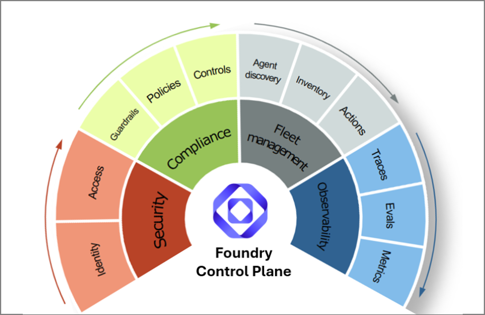

Sandbox to production¶
This is the complete release path. Use it after one of the type-specific tutorials when you want to validate the full develop -> evaluate -> release -> observe loop across sandbox, dev, qa, and prod environments.
The Prompt Agent and Hosted/HTTP Agent tutorials prove one target type in a small sandbox + dev loop with a PR gate. This end-to-end tutorial expands that same readiness model into the full promotion journey: multi-environment topology, generated workflows, release evidence, approval gates, observability, and trace-driven regression learning.

Foundry gives you the control plane: fleet management, observability, security, and compliance. AgentOps adds the repo contract around that control plane: repeatable CI gates, Doctor checks, release evidence, and trace-to-regression review.
What you will validate¶
| Stage | Activity | Main tools | AgentOps role | Output |
|---|---|---|---|---|
| 1 | Define the agent goal and risks | Foundry docs, VS Code, Copilot | Helps define what must be proven before release. | Success criteria and risk list |
| 2 | Choose Prompt Agent or Hosted Agent | Foundry portal, Foundry Toolkit, team architecture | Later references the target as name:version or URL. |
Target type decision |
| 3 | Provision the sandbox and dev environments (separate Foundry projects for prompt agents; separate endpoints for hosted agents) | Foundry portal, microsoft-foundry skill, your platform |
No ownership of create/deploy. | Two environments scoped to author and shared dev work |
| 4 | Author and iterate in sandbox | Foundry playground (prompt agents) or local app (hosted agents), agentops eval run |
Local eval gate before opening a PR. | Working sandbox-validated agent |
| 5 | Configure release checks | AgentOps CLI and skills | Creates agentops.yaml and repo-side release contract. |
Release checklist in repo |
| 6 | Open PR | Generated PR workflow with --doctor-gate critical |
Routes to the right runner, normalizes proof, and blocks the PR on critical Doctor findings. | PR gate signal |
| 7 | Merge and deploy to dev | Generated dev deploy workflow + your platform | Records candidate version (prompt agents) or commit/image (hosted agents) and re-evaluates after deploy. | Dev environment ready for promotion |
| 8 | Observe production after promotion | Foundry Operate, Azure Monitor, Application Insights | Checks wiring and links to official dashboards. | Traces, metrics, health |
| 9 | Review readiness | AgentOps Doctor, Cockpit, evidence pack | Answers "can we ship it, and where is the proof?" | evidence.md |
| 10 | Learn from traces | Foundry/App Insights exports, AgentOps trace promotion | Turns reviewed traces into regression candidates. | Future eval rows |
Multi-environment topology¶
.azure/
├── config.json # default: sandbox
├── .gitignore # excludes secrets
├── sandbox/.env # authoring
├── dev/.env # PR and deploy gate
├── qa/.env # release validation
└── prod/.env # production
For prompt agents, each .env points at a different Foundry project so
playground saves in sandbox don't appear in dev. For hosted agents, each
.env typically points at the same Foundry project (for observability) but
the agent URL (AGENTOPS_AGENT_ENDPOINT) differs per environment because the
hosted endpoint itself is the per-environment artifact.
Why a separate sandbox?
- Sandbox is where authors experiment and save freely.
- Dev is the gated target that CI writes to.
- Keeping them separate avoids half-baked versions in dev and keeps rollback cleaner.
- Start with one sandbox. Split only if save collisions become a real problem.
Name the Azure resources before provisioning. When you use the Foundry portal,
microsoft-foundryskill, or Foundry Toolkit for this tutorial, specify the resource group, Foundry / AI Services resource name, region, and model deployment explicitly (for examplerg-agentops-travel-<your-alias>,foundry-agentops-travel-<your-alias>,East US 2, andgpt-4o-mini). Replace<your-alias>with a short unique suffix when multiple people share the same subscription. Resource group names are unique within a subscription; Foundry / AI Services resource names should also be unique enough to avoid Azure naming conflicts. Also ask the skill/tool to grant or verifyFoundry Useraccess for your signed-in user (some portal screens still call thisAzure AI User) andCognitive Services OpenAI Userdata-plane access for your signed-in user plus any Foundry/Azure AI managed identities that will call evaluator models. A single shared resource group is easiest for demos because RBAC and cleanup happen once; production environments may use separate resource groups per stage. For a fuller Azure baseline with networking, identity, security, and operations patterns, see Azure AI Landing Zone.
The cross-environment identity story (versioning callout)¶
Each environment's Foundry version numbers or endpoint URLs diverge, but the following identifiers stay identical across sandbox, dev, qa, and prod for the same logical release:
For prompt agents:
prompt_file in git (byte-identical content)
└─ prompt_sha256 + git_sha (cross-environment identity)
├── sandbox Foundry project → travel-agent:5
├── dev Foundry project → travel-agent:2
├── qa Foundry project → travel-agent:7
└── prod Foundry project → travel-agent:3
For hosted agents:
git commit SHA (+ container image tag derived from it)
└─ cross-environment identity
├── sandbox endpoint (local FastAPI or per-dev deploy)
├── dev endpoint (https://travel-agent-dev.example.com)
├── qa endpoint (https://travel-agent-qa.example.com)
└── prod endpoint (https://travel-agent.example.com)
AgentOps records these identifiers in
.agentops/deployments/foundry-agent.json (per environment, uploaded as a CI
artifact) for prompt agents and in results.json / release evidence for
hosted agents. That means: given any deployed environment, you can trace
back to the exact git commit and (for prompt agents) the exact prompt
contents that produced it.
Prerequisites¶
Do this once before a live walkthrough or guided session, grouped by area. It keeps the tutorial focused on the release-readiness loop instead of unexpected permission prompts.
Foundry projects
- The Foundry project endpoint plus one Travel Agent target you can publish or expose:
travel-agent:<version>for prompt agents, or an HTTP endpoint for hosted agents. - A chat-capable Azure OpenAI deployment, for example
gpt-4o-mini. Local evals and CI need a judge model for evaluator calls.
Azure
- Azure CLI installed and
az loginworking on the tenant that owns the Foundry project. - Application Insights connected to the Foundry project or agent runtime, or one you can create/attach. For trace-to-dataset flows, also grant Reader on App Insights and its Log Analytics workspace to the Foundry project managed identity.
- A hosted endpoint CI can reach.
localhostworks for local eval, but remote CI needs a reachable HTTPS URL. - An Entra app registration with federated credentials (OIDC), or an admin ready to provide the client, tenant, and subscription id.
GitHub
- Push access to the tutorial repo and permission to run GitHub Actions or Azure Pipelines. PR and environment workflows only run after a push.
- GitHub environments such as
dev,qa, andproduction, or the equivalent Azure DevOps variables and service connections. gh auth loginauthenticated for the PR commands.
Coding agent
- Your coding-agent CLI (Copilot or similar) signed in before you run AgentOps skills, so it can read the repo and propose the GitHub and Azure setup steps.
Install AgentOps in a clean tutorial workspace:
mkdir agentops-end-to-end
cd agentops-end-to-end
python -m venv .venv
.\.venv\Scripts\Activate.ps1
python -m pip install -U pip
python -m pip install "agentops-accelerator[foundry,agent]" fastapi "uvicorn[standard]"
az login
For normal usage, prefer the published package above. For this tutorial path, install the aligned reference branch so the CLI, generated workflows, and tutorial steps stay in sync:
python -m pip install "agentops-accelerator[foundry,agent] @ git+https://github.com/Azure/agentops.git@develop"
You will provide the target values through the interactive agentops init
wizard. The evaluator endpoint/deployment is separate: set it only when running
local evals or configuring CI variables.
1. Create the Travel Agent target¶
Choose one path. The rest of the tutorial works with either target.
Option A: create a Prompt Agent in Foundry¶
- Open the Azure AI Foundry portal and select your project.
- Create a prompt-based agent named
travel-agent. - Use
gpt-4o-minior another chat-capable deployment in the project. - Paste these instructions:
You are Travel Agent, a concise travel planning assistant.
Help users plan short leisure trips. Always include:
- a short summary;
- a day-by-day plan when the user asks for an itinerary;
- practical notes about budget, transit, weather, or booking constraints;
- a reminder that you cannot make live reservations or purchases.
Ask one clarifying question only when the destination, duration, or traveler
preference is missing. Do not invent booking confirmations, prices, or
availability.
- Save and publish the agent.
- Set the target reference. Foundry commonly shows
travel-agent:2after this first publish. If Foundry shows a different version, use that exact value and shift the later prompt-regression numbers accordingly:
Option B: create a Hosted/HTTP Travel Agent endpoint¶
Create a minimal HTTP agent you can run locally first and later deploy with Foundry Toolkit, Azure Container Apps, AKS, or your normal platform.
@'
import os
from fastapi import FastAPI
from pydantic import BaseModel
app = FastAPI(title="Travel Agent")
class ChatRequest(BaseModel):
message: str
def plan_trip(message: str) -> str:
if os.getenv("TRAVEL_AGENT_MODE") == "regressed":
return "Travel depends on your preference. Search online and pick what looks best."
text = message.lower()
if "lisbon" in text:
return (
"Summary: Lisbon is a strong 3-day food and history trip. "
"Day 1: Baixa, Chiado, and a sunset viewpoint. "
"Day 2: Alfama, Sao Jorge Castle, and fado. "
"Day 3: Belem, pastries, and a riverside walk. "
"Notes: use transit, reserve popular restaurants early, and I cannot make live bookings."
)
if "seattle" in text:
return (
"Summary: Seattle can work well for a low-budget coffee and museum weekend. "
"Day 1: Pike Place, waterfront, and independent coffee shops. "
"Day 2: Museum of Pop Culture or Seattle Art Museum plus Capitol Hill. "
"Notes: use transit, plan for rain, choose free viewpoints, and I cannot make live bookings."
)
if "tokyo" in text:
return (
"Summary: Tokyo with kids works best with short travel hops and flexible pacing. "
"Plan: mix Ueno, Asakusa, Shibuya, teamLab or a science museum, parks, and one easy day trip. "
"Notes: use IC transit cards, avoid overpacking each day, and I cannot make live bookings."
)
return (
"Summary: I can help plan a short leisure trip. "
"Please share the destination, trip length, budget, and traveler preferences. "
"I cannot make live bookings."
)
@app.post("/chat")
def chat(request: ChatRequest) -> dict[str, str]:
return {"text": plan_trip(request.message)}
'@ | Set-Content -Encoding utf8 app.py
Start it in a second terminal:
cd agentops-end-to-end
.\.venv\Scripts\Activate.ps1
python -m uvicorn app:app --host 127.0.0.1 --port 8000
Set the local target:
To make this a real Foundry Hosted Agent for CI:
- Install the Foundry Toolkit for Visual Studio Code.
- Confirm the Foundry project has a deployed model and the required Hosted Agent permissions for your user or project identity.
- In VS Code, run
Microsoft Foundry: Create a New Hosted Agent. - Choose a single-agent template, Python or C#, and the model deployment.
- Replace the generated instructions or source logic with the Travel Agent behavior from this tutorial.
- Press F5 to debug locally with Agent Inspector.
- Run
Microsoft Foundry: Deploy Hosted Agent. - Copy the deployed endpoint URL and set:
If the deployed Foundry Hosted Agent follows the Responses API shape, use
protocol: responses in agentops.yaml.
If you want the notebook-style Foundry create/debug path, follow the Azure Samples repo for creating agents, tools, tracing, evaluation, and red-team scans:
https://github.com/Azure-Samples/microsoft-foundry-e2e-agent-observability-workshop/tree/2026-04-aie-europe
Grant agent-build and data-plane access to your identity and Foundry managed identities¶
Both options above (prompt agent and hosted HTTP agent) eventually drive
an agentops eval run that calls chat-completions on the AI Services
account behind your Foundry project — either through Foundry's cloud
graders or through the local AI-assisted evaluators. Creating a project
through the portal assigns you Foundry User only at the project
scope. Creating/building agents in the Foundry UI can also require
Foundry User on the parent Foundry / AI Services resource; some portal screens
still use the previous role name, Azure AI User. Foundry User does not cover
OpenAI data-plane actions on the parent account. Subscription Owner is
also insufficient: its built-in role definition has actions: ["*"] but
dataActions: []. Skipping the OpenAI role is what causes the eval to fail
later with PermissionDenied on
Microsoft.CognitiveServices/accounts/OpenAI/deployments/chat/
completions/action.
If your skill/tool already confirmed these role assignments, treat the commands
below as a verification/fallback step. Otherwise, run these assignments once per
AI Services account that hosts a Foundry project you will evaluate against. Cloud
evaluations run server-side and some agent or grader calls may authenticate as
Foundry/Azure AI managed identities, not only as your signed-in user. Assigning
the role only to your user can still leave graders failing with
AuthenticationError. Replace <resource-group> with the resource group you
chose above, for example rg-agentops-travel-<your-alias>, and
<account-name> with the parent Foundry / AI Services account name.
$subscriptionId = az account show --query id -o tsv
$resourceGroup = "<resource-group>"
$accountName = "<account-name>"
$accountScope = az cognitiveservices account show `
--resource-group $resourceGroup `
--name $accountName `
--query id -o tsv
$userObjectId = az ad signed-in-user show --query id -o tsv
az role assignment create `
--assignee $userObjectId `
--role "53ca6127-db72-4b80-b1b0-d745d6d5456d" `
--scope $accountScope
az role assignment create `
--assignee $userObjectId `
--role "5e0bd9bd-7b93-4f28-af87-19fc36ad61bd" `
--scope $accountScope
az resource list -g $resourceGroup `
--query "[?identity.principalId!=null].identity.principalId" -o tsv |
ForEach-Object {
az role assignment create `
--assignee-object-id $_ `
--assignee-principal-type ServicePrincipal `
--role "5e0bd9bd-7b93-4f28-af87-19fc36ad61bd" `
--scope $accountScope
}
Give the assignment a few minutes to propagate. Data-plane role assignments on the AI Services account do not take effect instantly — propagation to the evaluator workers can take several minutes (occasionally up to ~15). Evaluators authenticate per call, so the first eval right after granting the role may show intermittent
AuthenticationErroron a subset of graders and reportThreshold status: FAILEDeven when every threshold is green. This is a grader execution failure, not a quality regression — wait a few minutes and re-run the eval.
2. Create the travel eval dataset¶
New-Item -ItemType Directory -Force .agentops\data | Out-Null
@'
{"input":"Plan a 3-day first-time trip to Lisbon for a couple who likes food and history.","expected":"A concise 3-day Lisbon itinerary with food, history, neighborhoods such as Baixa, Alfama, and Belem, practical notes, and no claim to make live bookings."}
{"input":"Suggest a low-budget weekend in Seattle for a solo traveler who likes coffee and museums.","expected":"A practical weekend Seattle plan with low-budget choices, coffee and museum suggestions, transit or weather notes, and no claim to make live bookings."}
{"input":"I want to visit Tokyo for 5 days with two kids. What should we do?","expected":"A family-friendly 5-day Tokyo itinerary with kid-appropriate activities, transit and pacing notes, and no claim to make live bookings."}
'@ | Set-Content -Encoding utf8 .agentops\data\travel-smoke.jsonl
3. Initialize the repo-side release contract interactively¶
Answer the prompts as the wizard asks them:
| Prompt | Answer |
|---|---|
| Foundry project endpoint | https://<resource>.services.ai.azure.com/api/projects/<project> |
| Agent | The value in $env:TRAVEL_AGENT_TARGET, such as travel-agent:2 or http://127.0.0.1:8000/chat |
| Dataset path | .agentops/data/travel-smoke.jsonl |
The wizard does not ask for App Insights. Later runtime commands try to discover
the connected App Insights resource through the Azure AI Projects SDK. If the
project has no resource attached, or your identity cannot read it, run
agentops init --appinsights-connection-string "<connection-string>" or set
APPLICATIONINSIGHTS_CONNECTION_STRING manually in .agentops/.env.
If the first run shows starter defaults such as Agent [my-agent:1] or
Dataset path [.agentops/data/smoke.jsonl], replace them with your Travel Agent
target and dataset. Those defaults only come from the scaffolded starter file.
The wizard saves agent and dataset to agentops.yaml. The .agentops/.env
file is intentional: AgentOps keeps local Azure values out of source control
while eval, Doctor, and Cockpit commands resolve the same workspace environment.
The Foundry project endpoint lives there instead of in agentops.yaml; if you
force an App Insights connection string later, it is saved there too. Existing
azd workspaces keep using .azure/<env>/.env.
For a hosted HTTP endpoint, add the endpoint protocol fields:
Add auth_header_env: HOSTED_AGENT_TOKEN only when the deployed endpoint needs
a bearer token.
4. Decide the eval runner¶
Expected result:
| Agent target | Runner |
|---|---|
agent: name:version |
AgentOps cloud eval in Foundry |
agent: https://... |
agentops-local |
agent: model:<deployment> |
agentops-local |
This is the key alignment rule. Foundry-native prompt agents run cloud eval in
Foundry through agentops eval run, so AgentOps can enforce thresholds and write
repo-side evidence. AgentOps keeps the local path for hosted endpoints, models,
unsupported evaluator mappings, and fallback cases.
When the quality gate uses a task-specific rubric, keep it as an advanced
Foundry / azd hardening step: first confirm the rubric evaluator exists in the
Foundry project and that an azd run emits stable metric names for its scores.
Then add rubrics: and matching thresholds to agentops.yaml, set
execution: azd, and run agentops eval init --force. Do not use placeholder
rubric names in the first tutorial pass.
5. Run the first eval¶
For hosted agents or local fallback:
$env:AZURE_OPENAI_ENDPOINT = "https://<resource>.openai.azure.com"
$env:AZURE_OPENAI_DEPLOYMENT = "gpt-4o-mini"
agentops eval analyze
agentops eval run --output .agentops\results\manual-smoke
code .agentops\results\manual-smoke\report.md
For prompt agents, generate the PR workflow with --deploy-mode prompt-agent
(uses the stage-prompt-as-candidate template) and --doctor-gate critical
so critical Doctor findings block the PR:
agentops workflow generate `
--kinds pr `
--deploy-mode prompt-agent `
--doctor-gate critical `
--force
For hosted endpoints, omit --deploy-mode prompt-agent (the staging flow is
prompt-agent specific):
--doctor-gate criticalis the new default. The PR workflow runsagentops doctor --severity-fail critical, which exits non-zero (and fails the PR check) when Doctor reports any critical finding such as aregression.<metric>drop. Use--doctor-gate warningto also block on warnings during hardening sprints. Use--doctor-gate noneto make Doctor advisory-only (the pre---doctor-gatebehavior).Promoting prompt agents across multiple Foundry projects? Add a
prompt_agent_bootstrapblock (model deployment plus optional description, model_parameters, and tools) toagentops.yaml. When the deploy workflow runs against a dev / qa / prod Foundry project that does not yet contain the agent, it reads that block plusprompt_fileand creates the first version automatically. No per-environment manual seeding. See the prompt-agent tutorial for the full multi-environment journey.
Before running that workflow, make the PR gate runnable in GitHub. Install the AgentOps workflow skill if needed:
Then ask Copilot:
Use the AgentOps workflow skill to make the generated PR workflow runnable for
this Foundry prompt-agent repo.
Create or connect the GitHub repo if needed, create the `dev` environment, wire
Azure OIDC, set AZURE_OPENAI_DEPLOYMENT=gpt-4o-mini as a GitHub `dev`
environment variable or equivalent Azure DevOps pipeline variable, verify the
OIDC principal has **both** Foundry User access on the dev Foundry project
**and** Cognitive Services OpenAI User access on the underlying Azure AI
Services account that hosts the evaluator model (both are required — without
the OpenAI User role, every cloud eval metric returns null), verify
AZURE_TENANT_ID is the tenant that owns the Entra app registration and its
federated credential, and show me the plan before changing GitHub or Azure.
That value is not an agentops init answer. It tells the Foundry cloud eval
which model deployment should judge responses:
The generated workflow prepares a temporary cloud config, runs
agentops eval run, and writes normalized results under:
It also records release evidence after the gate.
Doctor runs in the PR workflow with --severity-fail critical (the
--doctor-gate critical default). A critical Doctor finding — for example
regression.coherence: critical from a metric drop that still passes
thresholds — fails the PR check the same way an eval threshold breach
does. Warning- and info-level findings are advisory and attached to the
PR as evidence. Production deploy workflows always run Doctor with
--severity-fail critical regardless of this flag.
No tutorial-only Action replacement is needed. The generated workflow keeps the
evaluation in Foundry while AgentOps owns the CI threshold decision and the
results.json / report.md artifacts. The detailed managed-eval view stays in
Foundry Evaluations through the link in the AgentOps report.
6. Force a regression and recover¶
Run one deliberate failure before you assemble the release path. It makes the tutorial concrete: you compare a worse agent against a known-good run, fix it, and rerun the same gate.
Prompt Agent regression¶
The workflow skill in step 5 above already committed your changes, pushed
main to GitHub, and triggered a first verification run of agentops-pr.yml.
Open the latest workflow run's Foundry Evaluations link and keep that page
open as the baseline.
- In Foundry, edit the
travel-agentinstructions to this intentionally bad version:
Answer travel questions in one vague sentence. Do not include day-by-day
plans, practical notes, constraints, or booking caveats.
- Publish it as the next version, for example
travel-agent:3. - Re-run the wizard and update only the agent value:
Keep the same project endpoint and dataset, but answer Agent with the
regressed version.
4. Run the generated PR workflow. In Foundry Evaluations and the workflow
summary, compare the regressed run with the previous prompt version. The
vague prompt should lose quality because it no longer satisfies the travel
dataset.
5. Restore the original Travel Agent instructions, publish again as a fixed
version such as travel-agent:4, re-run agentops init --reconfigure, and
run the pipeline again.
This exercises Foundry prompt versioning, AgentOps cloud eval in Foundry, and AgentOps evidence for the exact version under release review.
Hosted/HTTP regression¶
The sample endpoint has a regression switch. Stop the server, restart it in regressed mode, and compare it with the first run:
agentops eval run `
--baseline .agentops\results\manual-smoke `
--output .agentops\results\regressed
code .agentops\results\regressed\report.md
The report should show lower quality or threshold movement. Now stop the server, remove the regression switch, restart it, and compare the fixed run:
Remove-Item Env:\TRAVEL_AGENT_MODE -ErrorAction SilentlyContinue
python -m uvicorn app:app --host 127.0.0.1 --port 8000
agentops eval run `
--baseline .agentops\results\regressed `
--output .agentops\results\fixed
code .agentops\results\fixed\report.md
This exercises the AgentOps local runner, baseline comparison, normalized
results.json, and the same fix-rerun loop you put behind a PR gate.
7. Add CI/CD gates¶
Generate the common release path. For prompt agents, add
--deploy-mode prompt-agent so the PR template stages your prompt as a
candidate version against the dev project; for hosted agents, omit it.
--doctor-gate critical makes the PR template block on critical Doctor
findings (deploy workflows already use strict critical gating):
# Prompt agents
agentops workflow generate `
--kinds pr,dev,qa,prod `
--deploy-mode prompt-agent `
--doctor-gate critical `
--force
# Hosted endpoints
agentops workflow generate `
--kinds pr,dev,qa,prod `
--doctor-gate critical `
--force
The generated workflows are intentionally boring:
- PR gate: evaluate and publish report/evidence. If
agentops.yamldeclares rubric evaluators, this is the same azd/Foundry rubric gate you ran locally; the PR does not downgrade to a plain smoke test. - Dev/QA/Prod: deploy with azd or placeholders, then run readiness checks.
- Optional Doctor cadence: generate
--kinds doctorseparately if you want a scheduled readiness run outside PRs.
Before you run the generated workflows, hand the broader environment wiring to the AgentOps workflow skill:
Then ask Copilot:
Use the AgentOps workflow skill to get the generated PR, Dev, QA, and Prod
workflows running for this Foundry agent repo.
Extend the PR/dev setup if it already exists, wire Azure OIDC for the `qa` and
`production` environments, confirm required Actions variables such as
AZURE_OPENAI_DEPLOYMENT, verify the OIDC principals have **both** Foundry User
access on each Foundry project **and** Cognitive Services OpenAI User on the
underlying AI Services account hosting the evaluator model (both are required
— without the OpenAI User role, every cloud eval metric returns null), and
keep deploy placeholders unless this repo already has an azd deployment path.
Show me the plan before changing GitHub or Azure, and call out anything that
needs owner/admin permission.
Use this moment in the video to connect the four repos: Foundry Toolkit creates
and deploys the agent, ai-agent-evals runs the official prompt-agent CI gate,
AgentOps captures the release-readiness evidence, and the Microsoft Foundry
skill is the cross-repo guidance layer that teaches the same Operate loop to
coding agents.
8. Wire observability¶
Foundry and Azure Monitor own live observability. AgentOps only checks whether the repo and runtime are wired to those signals, whether release evidence can point back to them, and whether reviewed traces can become future regression rows.
Use this loop in the video:
| Signal | Foundry or Azure Monitor action | AgentOps handoff |
|---|---|---|
| App Insights connection | In Foundry, open the project or agent Traces view and connect an App Insights resource. Verify it under project connected resources. | Doctor checks whether telemetry wiring is discoverable. |
| Trace sampling | Configure the project's trace sampling policy in Foundry or the hosted-agent observability settings your team owns. Keep the policy name in agentops.yaml under observability.trace_sampling. |
Doctor/evidence can show reviewers that live-quality sampling exists before traces are promoted. |
| Live trace | Run one playground prompt for a Prompt Agent, or call the hosted endpoint a few times. Open the agent Traces tab, wait 2-5 minutes if needed, and click the Trace ID. In the modal, inspect spans plus the Input + Output and Metadata tabs. | Evidence and Cockpit link reviewers back to the runtime view. |
| Operate summary | Switch to Operate -> Overview, select the same subscription/project, wait for metrics to sync, and use Ask AI for dashboard-level questions such as Help me identify any issues or anomalies in my agent metrics. |
The summary informs the release discussion; AgentOps does not rewrite it. |
| Eval context | From a Foundry eval run, inspect row-level explanations, rubric scores, and, when available, the trace attached to the interaction. | The repo keeps the exact target, dataset, rubric gate, and evidence together. |
| Trace learning | Export or curate traces that represent real issues, including conversation turns when present. | agentops eval promote-traces turns reviewed traces into regression candidates and preserves replay/evaluation lineage. |
For the screen recording, make the Foundry side visible before opening AgentOps Cockpit:
| Panel | Show | Say |
|---|---|---|
| Project overview / connected resources | Foundry project plus attached App Insights. | "This is where runtime telemetry is connected." |
| Agent or endpoint Traces | One Trace ID, span tree, input/output, metadata, latency, model/tool call, and conversation context if present. | "This is the single interaction drilldown." |
| Foundry Evaluations | The managed eval run and row-level scoring. | "This is the quality evidence for the candidate." |
| Operate overview | Aggregate health, errors, latency, usage, and Ask AI when available. | "This is the production operations view." |
| Application Insights Logs | KQL for the same operation or trace. | "This is the raw Azure Monitor investigation path." |
| Red Teaming / safety | Scan entry point or linked scan result. | "This is the managed safety review path." |
Then open AgentOps Doctor/Cockpit to show the complement: repo-side gates, workflow state, evidence, findings, and links back to those official Foundry and Azure Monitor surfaces.
If runtime discovery does not find a connected App Insights resource, or your identity cannot read it, set the connection string in the AgentOps local env:
agentops init --appinsights-connection-string "<connection-string>"
agentops init show --reveal-secrets
notepad .agentops\.env
The env file should include:
For the local Hosted/HTTP sample, add OpenTelemetry before you restart the endpoint:
Add these imports to app.py:
Configure the tracer after app = FastAPI(title="Travel Agent"):
if os.getenv("APPLICATIONINSIGHTS_CONNECTION_STRING"):
configure_azure_monitor()
tracer = trace.get_tracer("agentops.travel-agent")
Wrap the /chat response in a span:
@app.post("/chat")
def chat(request: ChatRequest) -> dict[str, str]:
with tracer.start_as_current_span("travel-agent.chat") as span:
mode = os.getenv("TRAVEL_AGENT_MODE", "normal")
span.set_attribute("travel.agent.mode", mode)
span.set_attribute("travel.query.length", len(request.message))
response_text = plan_trip(request.message)
span.set_attribute("travel.response.length", len(response_text))
return {"text": response_text}
Then load the connection string into the server terminal:
$env:APPLICATIONINSIGHTS_CONNECTION_STRING = (
Get-Content .agentops\.env |
Where-Object { $_ -like "APPLICATIONINSIGHTS_CONNECTION_STRING=*" } |
Select-Object -First 1
) -replace "^APPLICATIONINSIGHTS_CONNECTION_STRING=", ""
Restart uvicorn after setting that variable, then call the endpoint again so
the new requests produce spans.
For a real Foundry Hosted Agent, the runtime emits richer Foundry spans for
agent runs, tool calls, model calls, and conversation context. For the local
FastAPI sample, use App Insights Logs to see the custom travel-agent.chat
operation and attributes; it does not produce Foundry-managed Conversation IDs
or the same agent trace modal as a Foundry-managed runtime.
Use this KQL in the App Insights Logs view when you have a Trace ID or operation ID from the portal:
union traces, requests, dependencies
| where timestamp > ago(1h)
| where operation_Id == "<trace-or-operation-id>"
| order by timestamp asc
9. Run Doctor and create release evidence¶
agentops doctor --workspace . --evidence-pack
code .agentops\agent\report.md
code .agentops\release\latest\evidence.md
agentops doctor can take a few minutes here because it checks Azure auth,
Foundry discovery, Azure Monitor/App Insights, local eval history, workflow
evidence, and readiness rules. The terminal progress line should keep moving
while those sources are collected.
Read the output in this order: AgentOps pre-flight lists the local auth and
telemetry-discovery checks, Release readiness is the verdict to discuss,
Findings / Finding summary names the blocking or warning items, and
Evidence pack / Evidence report are the review files. Warnings are advisory
unless strict pre-flight is enabled; blocked means review the findings, not
that Doctor crashed. If App Insights is connected in Foundry but AgentOps cannot
discover it, run az login, confirm Reader on the Foundry project resource
group, or set APPLICATIONINSIGHTS_CONNECTION_STRING explicitly.
Use this quick readout while presenting the terminal output:
| Output | How to explain it |
|---|---|
AgentOps pre-flight 4 ok |
The workspace, Azure auth, Foundry project, and App Insights discovery checks are all usable. |
Wrote |
The local Doctor diagnostic report was generated. |
Release readiness: blocked |
The command succeeded, but the current evidence has findings that block release readiness. |
Evidence pack / Evidence report |
These are the release-review artifacts to open or attach to the PR/release discussion. |
Findings: ... |
This is the severity rollup; critical items are what you discuss first. |
Finding summary |
This is the terminal triage list. Explain production latency/errors and eval regressions as release blockers, then use workflow, threshold, RAI, and trace-regression warnings to show the remaining operational hardening work. |
The useful story is the insight list, not the fact that a file was written. Doctor connects the whole operating model: production telemetry findings show whether the live agent is healthy, regression findings show whether quality moved backward, RAI/safety findings show governance gaps, and operational findings show whether the repo has the release machinery reviewers expect. Use critical findings as release blockers and warning/info findings as the backlog that turns the POC into an operated service.
If those same Doctor findings appear inside a PR workflow, critical
findings block the merge by default (the PR template runs Doctor with
--severity-fail critical, the --doctor-gate critical default); warning
and info findings are attached to the PR as evidence rather than as a
gate. Production deploy workflows always run Doctor with
--severity-fail critical and are the last-mile release gate.
Open both files. The Doctor report is the diagnostic view: it tells you which signals are present, which are missing, and whether the finding is blocking or informational. The evidence pack is the reviewer view: it turns those signals into a concise release artifact.
The evidence pack is not a second gate. It summarizes existing signals:
- eval gate status;
- Doctor findings;
- CI/CD readiness;
- telemetry readiness;
- trace-regression status;
- links back to Foundry and Azure Monitor.
In a fresh tutorial, some findings should still be missing: production telemetry may not have live traffic, scheduled workflows may not have history, and trace regression candidates may not exist yet. That is useful tutorial feedback, not a failure of Doctor.
If production telemetry does carry enough live traffic to trip latency or
error criticals, those are honest signals — not tutorial noise. The thresholds
that decide critical-vs-warning live in .agentops/agent.yaml
(checks.latency.p95_threshold_seconds, checks.errors.rate_threshold) and are
separate from the agentops.yaml eval-gate thresholds; raise them only if you
deliberately want to relax the production gate for a demo.
10. Run Foundry red-team scans¶
Red-team scans are a Foundry capability. Run them from Foundry Observability / Red Teaming or the official Foundry SDK path. AgentOps does not create or run managed red-team scans.
Use AgentOps for the repo-side follow-through:
- Add safety/adversarial rows to your eval dataset when there are repeatable cases worth gating in CI.
- Keep the Foundry red-team scan URL or summary with the release review.
Store only safe metadata in the repo, for example
.agentops/governance/redteam-plan.md; keep raw payloads/results in the approved secure system. - If you use ASSERT or Agent Control Specification, add reviewed artifacts to the repo or CI artifacts and point AgentOps at them. These artifacts join the normal release proof alongside eval results, Doctor findings, and workflow runs:
assert_path: .agentops/governance/assert-evidence.md
acs_path: acs.yaml
redteam_path: .agentops/governance/redteam-plan.md
AgentOps records path, SHA-256 hash, status, and ACS checkpoint coverage in release evidence. ASSERT execution, ACS enforcement, Guided Guardrail setup, and red-team scans remain in their owning tools. 4. Re-run Doctor and evidence:
Use the same Doctor output rules from step 9: a multi-minute run is normal,
pre-flight warnings explain access or telemetry-discovery gaps, and blocked
means the evidence needs review.
Cockpit links back to Foundry Red Teaming so reviewers can drill into the managed scan results.
11. Promote production traces into regression candidates¶
Export reviewed Foundry or Application Insights traces to JSON/JSONL. Preview the conversion first:
Export or copy the reviewed trace rows into
.agentops\traces\candidate-traces.jsonl, then preview the conversion:
If the rows look useful, apply them:
This writes reviewable regression candidates under .agentops/data/. AgentOps
does not claim they are human-approved truth. They are candidates until the team
reviews and accepts them.
12. Open Cockpit¶
Cockpit starts a read-only local web server and prints
http://127.0.0.1:8090. Open that URL in your browser; press Ctrl+C in
the terminal to stop it. It reflects the active azd environment
(sandbox, from defaultEnvironment in .azure/config.json) — there is no
URL switch. To inspect dev, stop Cockpit, point the active env at dev
(set defaultEnvironment: dev in .azure/config.json, or export
AZURE_ENV_NAME=dev), then rerun the command.
Read the page top to bottom and confirm each card:
| Section | What to confirm |
|---|---|
| Foundry connection | The Foundry project and tenant resolve, and the agent identity matches your agentops.yaml target. |
| Open in Foundry | The deep-links open your project in the correct tenant. |
| Observability readiness | Trace setup / sampling status from the latest Doctor analysis. |
| AgentOps Doctor | The same finding rollup from the Doctor / evidence-pack step (criticals first, then warnings). |
| Local eval history | Your agentops eval run baseline and regression reruns appear. |
| Quality metrics | Evaluator score trends from your runs. |
| Production telemetry | App Insights latency / error snapshot (or a clear "no live traffic" state in a fresh workspace). |
| CI/CD Pipelines | The workflows you generated are listed. |
| Next actions | The prioritized backlog Cockpit derives from the open findings. |
Cockpit does not run checks or mutate anything — it renders the latest
results.json, Doctor report, and evidence pack you already produced, and
links out to Foundry / Azure Monitor for live runtime data.
Completion checklist¶
You are ready for a release review when:
- The agent target is explicit in
agentops.yaml. For prompt agents,agent:plusprompt_file:lock the cross-environment identity (prompt SHA + git SHA). For hosted agents, the git commit SHA is the identity recorded inresults.jsonand evidence. .azure/separates sandbox from dev (and qa / prod if you provisioned them); the sandbox is the team's authoring and experimentation space and dev is the shared promotion target.- CI uses the expected runner for the target (cloud Foundry eval for prompt agents in CI, local runner for hosted endpoints).
- Eval results or Microsoft Foundry eval metadata are attached to the workflow artifact.
- The PR workflow was generated with
--doctor-gate critical, so a critical Doctor finding blocks the PR. Deploy workflows always run Doctor with--severity-fail critical. - The tutorial includes one deliberate regression and one fixed rerun, either through Foundry prompt versions or AgentOps local baseline comparison.
agentops doctor --evidence-packwritesevidence.md.- The workflow summary surfaces the Doctor finding summary from
evidence.md, so blocked readiness names the critical items to fix. - Application Insights is connected or the evidence clearly says it is missing.
- At least one trace or operation was inspected in Foundry Traces or App Insights, and Operate Ask AI was used for an aggregate summary when available.
- Foundry red-team scans are linked or tracked as a release action.
- ASSERT / ACS / red-team artifacts are represented as evidence-only references when your governance process uses them.
- Trace learnings have a path back into regression candidates.
Where to go next¶
- Detailed prompt-agent walkthrough (sandbox + dev journey, regression PR, Doctor-blocking gate, fix + redeploy): Prompt agent tutorial.
- Detailed HTTP-agent walkthrough (same sandbox + dev story but for endpoints, with the git SHA / image tag identity story): HTTP agent tutorial.
- CI/CD reference (Ship and GitHub Actions)
for full
agentops workflow generateflag reference including the--doctor-gatesemantics. - Doctor explainer (Doctor explained)
for the full readiness check catalog and severity rules that drive
the
--doctor-gateblock decision.
Repos and skills used¶
| Repository / skill | Used for |
|---|---|
Azure/agentops |
CLI, eval runner, PR and environment gates, Doctor, Cockpit, evidence. |
microsoft-foundry skill (optional) |
Guides Foundry project creation and environment wiring in Copilot Chat. Portal fallback included. |
microsoft/foundry-toolkit |
Create, debug, and deploy the agent and copy its endpoint URL. |
Azure-Samples/microsoft-foundry-e2e-agent-observability-workshop |
Optional reference path for Foundry traces, evaluations, and red-team scans. |